Relocation & Dressroom Making
시스템행거 이전설치
드레스룸 제작
있던 행거는 새 공간에 맞춰 다시 세우고, 없던 드레스룸은 벽에 맞춰 새로 만듭니다.
시스템행거는 천장과 바닥 사이를 폴로 지지하거나 벽에 고정하는 구조라서, 공간이 바뀌면 천장 높이·벽 폭·창문 위치에 따라 배치를 다시 잡아야 합니다. 코니처는 기존 행거를 해체해 부품을 정리하고, 새 공간 조건을 확인한 뒤 수평과 고정 상태까지 맞춰 재설치합니다.
이사, 같은 집 안에서 방을 옮기는 방간이동, 드레스룸 가구 재배치, 흔들리거나 처진 행거 재조립까지 서울·경기·수도권 현장을 방문합니다.
새로 만드는 드레스룸·시스템행거·팬트리선반·붙박이장은 실측 후 벽 치수와 옷 구성에 맞춰 설계하고, 정확한 견적을 드린 뒤 제작·설치합니다.
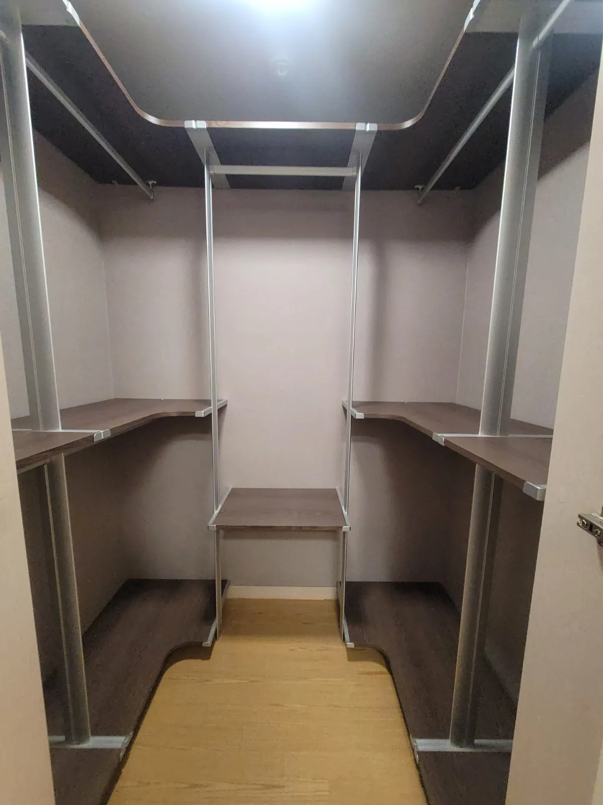
Situations
이럴 때 이전설치가 필요합니다
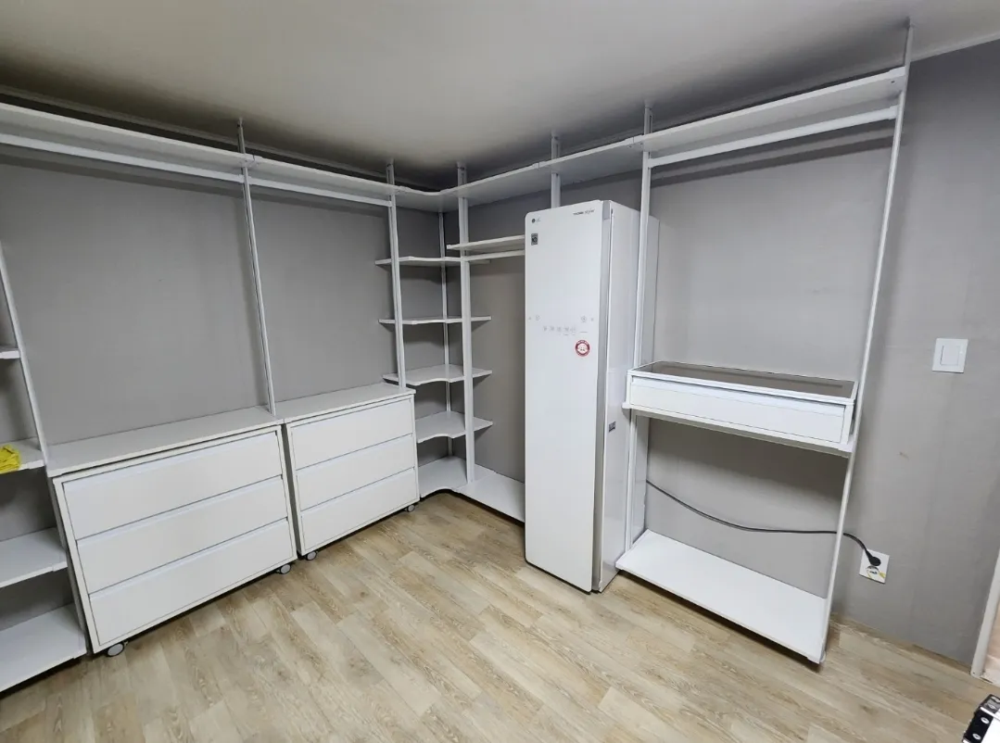
이사할 때
기존 집에서 해체하고 새 집 구조에 맞춰 다시 설치합니다.
자세히 보기 →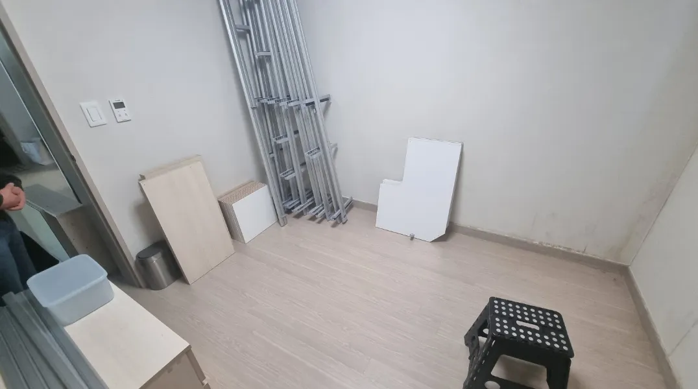
다른 방으로 옮길 때
이사 없이 드레스룸을 안방·작은방 등 다른 방으로 옮깁니다.
자세히 보기 →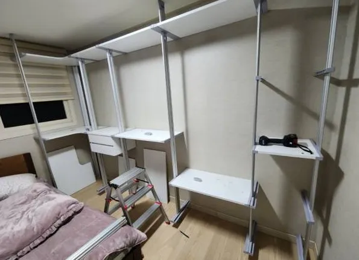
배치를 바꾸고 싶을 때
같은 방 안에서 일자형을 ㄱ자·ㄷ자로 바꾸는 등 구성을 다시 잡습니다.
자세히 보기 →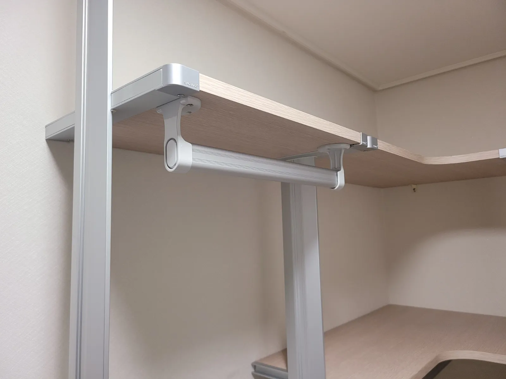
흔들리거나 처질 때
해체 후 재조립과 수평 조정으로 흔들림·처짐을 바로잡습니다.
자세히 보기 →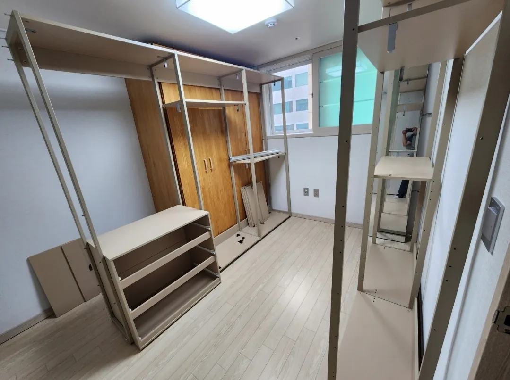
공사 때문에 잠시 철거할 때
도배·바닥 공사 전에 해체하고, 공사가 끝나면 다시 설치합니다.
자세히 보기 →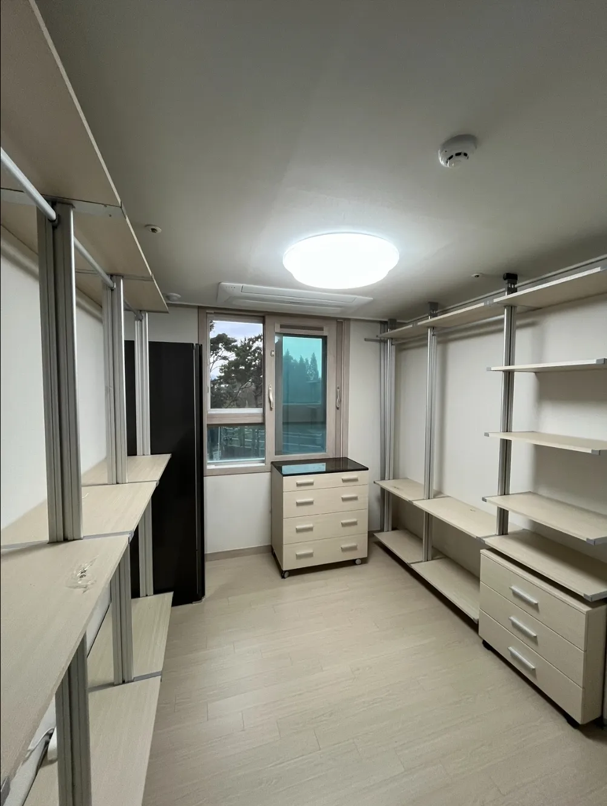
보관해 둔 행거를 다시 쓸 때
분해해서 보관하던 행거를 새 공간에 맞춰 조립합니다.
자세히 보기 →Custom Making
새로 만드는 맞춤제작
기성품 규격 대신 우리 집 벽 치수에 맞춰 만듭니다. 사진과 원하는 구성을 보내주시면 대략적인 방향을 먼저 안내하고, 정확한 견적은 실측 후 드립니다. 프레임·선반 색상도 고르실 수 있으니 원하시는 색을 문의해 주세요.
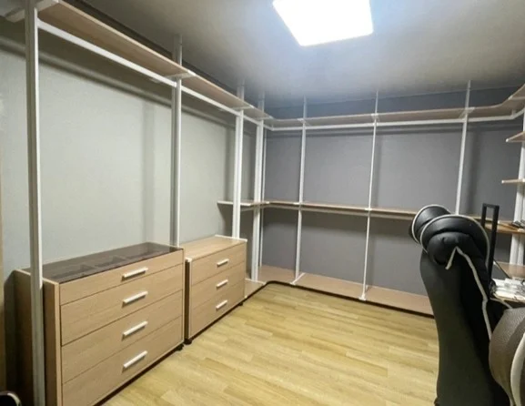
드레스룸 제작
옷 구성에 맞춰 행거·선반·서랍장을 설계해 벽 끝까지 채웁니다.
자세히 보기 →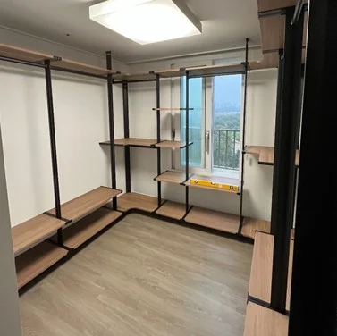
시스템행거 주문제작
벽 고정형과 천장고정형 중 공간에 맞는 방식으로 만듭니다.
자세히 보기 →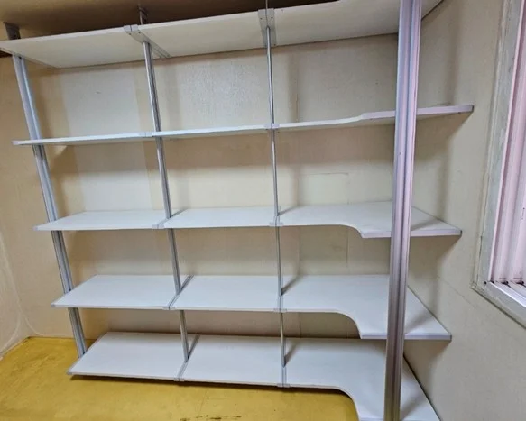
팬트리선반 맞춤제작
깊은 냉장고장, 코너 팬트리까지 꺼내 쓰기 쉬운 깊이로 맞춥니다.
자세히 보기 →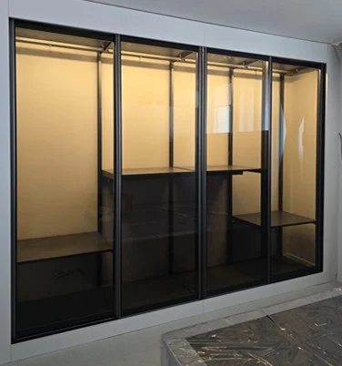
슬라이딩 시스템장
벽 폭에 맞춘 레일과 도어로 옷을 깔끔하게 가립니다.
자세히 보기 →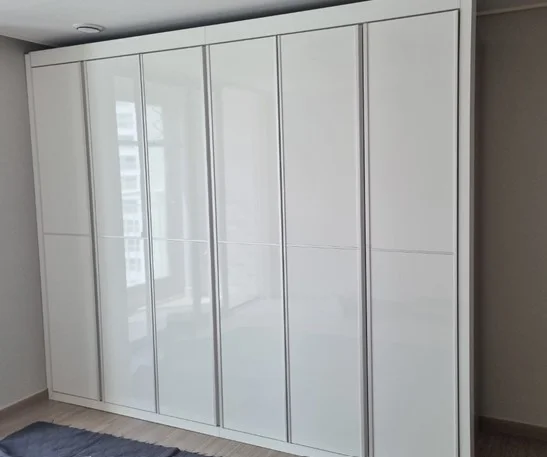
붙박이장 맞춤제작
벽 끝부터 천장까지 빈틈 없이 채우는 붙박이장을 만듭니다.
자세히 보기 →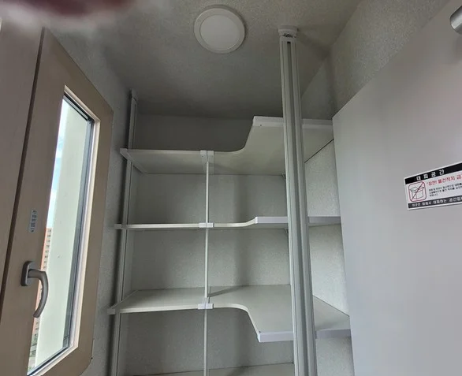
실외기실·베란다 선반
좁고 높은 자투리 공간을 배관과 창문을 피해 수납으로 바꿉니다.
자세히 보기 →Checklist
상담 전에 확인하는 항목
| 항목 | 확인 내용 | 필요한 이유 |
|---|---|---|
| 현재 행거 | 전체 사진, 폭과 칸 수, 서랍·거울 등 부속 | 해체 범위와 작업 시간을 가늠합니다 |
| 천장 높이 | 설치할 공간의 바닥~천장 높이 | 폴 길이가 맞는지, 조정이 필요한지 판단합니다 |
| 설치할 벽 | 벽 폭, 창문·콘센트·에어컨 위치 | 칸 수와 선반 배치를 새로 잡습니다 |
| 벽·천장 재질 | 콘크리트, 석고보드 등 | 재질에 따라 고정 방법이 달라집니다 |
| 이동 조건 | 층수, 엘리베이터 유무, 이동 거리 | 긴 폴과 선반 운반 방법을 정합니다 |
| 일정 | 해체일과 설치일, 이사 날짜 | 같은 날 진행할지 나눠서 진행할지 정합니다 |
Process
이전설치는 이렇게 진행됩니다
사진·치수 상담
현재 행거 사진과 새 공간 치수를 문자로 받아 작업 범위를 안내합니다.
방문 일정 확정
이사·공사 일정에 맞춰 해체일과 설치일을 정합니다.
해체·부품 정리
폴, 선반, 브래킷을 구분해 정리하고 파손되지 않게 포장합니다.
재설치
새 공간에 맞게 배치를 잡고 수평과 고정 상태를 맞춥니다.
점검·마무리
흔들림과 선반 수평을 확인하고 작업 자리를 정리합니다.
FAQ
자주 묻는 질문
어떤 제품이든 이전설치가 되나요?
폴 고정형, 벽 고정형, 프레임 스탠드형 등 제품 구조에 따라 해체·설치 방법이 다릅니다. 현재 행거 사진을 보내주시면 구조를 먼저 확인하고 가능한 방법을 안내해 드립니다.
새 공간이 더 좁거나 천장이 낮으면요?
칸 수를 줄이거나 선반 배치를 바꿔 설치할 수 있습니다. 천장 높이가 달라 폴 길이가 맞지 않는 경우에는 방법을 미리 안내해 드립니다.
철거 후 벽에 남는 나사 자국도 처리해 주나요?
코니처는 벽 보수는 진행하지 않습니다. 철거 후나 새로 설치할 때 고정 자국이 남을 수 있는 위치는 작업 전에 미리 알려드립니다.
비용은 어떻게 확인하나요?
이전설치는 행거 폭과 칸 수, 부속 구성, 층수와 이동 거리에 따라 달라지며 사진과 치수를 보고 안내해 드립니다. 맞춤제작은 사진과 원하는 구성으로 대략 안내한 뒤, 실측 후 정확한 견적을 드립니다.
새로 만드는 드레스룸도 색상을 고를 수 있나요?
네. 프레임과 선반 색상을 고르실 수 있습니다. 색상 종류가 여러 가지라 원하시는 분위기를 문의해 주시면 맞는 조합을 안내해 드립니다.
어느 지역까지 방문하나요?
서울과 경기, 인천을 포함한 수도권 지역을 방문합니다. 정확한 방문 가능 여부는 주소를 알려주시면 바로 확인해 드립니다.